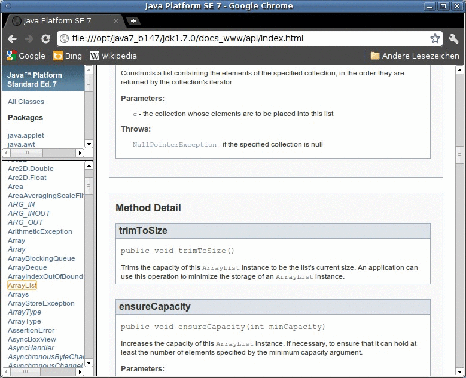
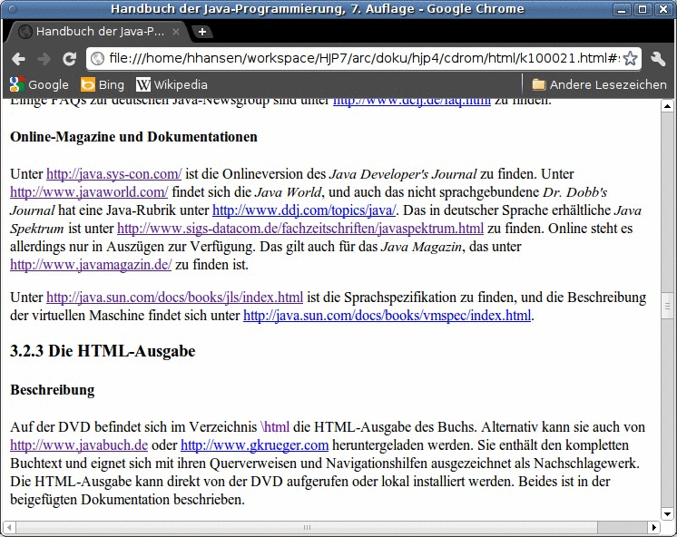
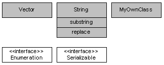
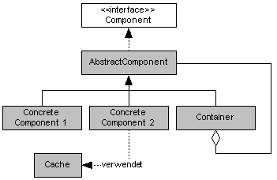

4.2 Weiterführende Informationen
Die Dokumentation zum JDK befindet sich auf der beigefügten DVD.
Sie liegt im Verzeichnis \install\java6
und kann wie in Abschnitt 2.1
beschrieben installiert werden. Es empfiehlt sich außerdem,
die Datei \readme.txt zu lesen, um einen
Überblick über den Inhalt der DVD zu bekommen.
Wird die JDK-Dokumentation in das vorgeschlagene Installationsverzeichnis
extrahiert, kann sie durch Aufruf der Datei c:\jdk1.7\docs\index.html
mit einem HTML-Browser gelesen werden. Diese Einstiegsseite enthält
Verweise auf alle anderen Teile der Dokumentation. Ein Großteil
von ihnen wird zusammen mit dem JDK ausgeliefert.
Die bei der täglichen Arbeit wichtigste Dokumentation ist die
API-Dokumentation des JDK. Sie kann über den Link »Java
Platform, Standard Edition 7 API Specification« oder durch direkten
Aufruf der Datei c:\jdk1.7\docs\api\index.html
gestartet werden. Als API bezeichnet
man das Application Programming Interface,
also die Programmierschnittstelle einer Klasse, eines Pakets oder
einer ganzen Bibliothek. Die API-Dokumentation des JDK gibt detaillierte
Auskunft zu allen öffentlichen Paketen, Klassen, Methoden und
Variablen. Sie wurde von den JDK-Entwicklern mit javadoc
generiert und sieht etwa so aus:

Abbildung 4.1: Die API-Dokumentation des JDK
Die drei Fenster haben folgende Bedeutung:
- Im linken oberen Fenster findet sich eine Liste aller Pakete des
JDK. Ein Klick auf eines der Pakete stellt die Liste der zugehörigen
Klassen im linken unteren Fenster dar.
- Das linke untere Fenster zeigt alle Klassen, Interfaces und Exceptions
des aktuellen Pakets. Wird ein Element angeklickt, so erscheint auf
der rechten Seite seine Beschreibung.
- Auf der rechten Seite wird eine einzelne Klasse oder ein Interface
beschrieben. Am oberen Rand werden Vererbungsinformationen angezeigt,
darunter folgt die allgemeine Klassenbeschreibung. Anschließend
kommt eine Linkleiste für Konstanten, Variablen, Konstruktoren
und Methoden. Ein Klick auf eines dieser Elemente verzweigt zu dessen
detaillierter Beschreibung. Abbildung 4.1
zeigt die Beschreibung der Methode trimToSize
der Klasse ArrayList
des Pakets java.util.
Die API-Dokumentation ersetzt zwar nicht die konzeptionelle Beschreibung
der Java-Themen (das ist Aufgabe dieses Buchs), als Nachschlagewerk
zu Details der Klassenbibliothek ist sie jedoch unentbehrlich. Der
Umgang mit ihr sollte jedem Java-Entwickler in Fleisch und Blut übergehen.
Manchmal bieten die Hilfesysteme der integrierten Entwicklungsumgebungen
sogar noch komfortablere Möglichkeiten, auf die Dokumentation
von Klassen und Methoden zuzugreifen.
Java ist die Sprache des Internet und folglich gibt es unzählige
Ressourcen im Internet, die sich in der einen
oder anderen Weise mit Java beschäftigen. Leider veralten viele
der Adressen fast ebenso schnell, wie sie erschienen sind, und ein
Buch ist daher nur bedingt geeignet, sie aufzuzählen. Wir wollen
uns auf einige der wichtigsten Adressen beschränken, die bei
der Entwicklung von Java-Programmen nützlich sein können.
Internetforen und Mailinglisten
Das wichtigste Internetforum rund um Java findet sich auf den Servern
von Oracle. Die Seite http://forums.oracle.com/forums/category.jspa?categoryID=285
listet mehrere Dutzend Foren zu verschiedenen Themen auf, darunter
auch eines speziell für Anfänger (http://forums.oracle.com/forums/forum.jspa?forumID=921).
Die Foren lassen sich mit Hilfe einer Suchfunktion bequem nach Schlagworten
durchsuchen und natürlich durch eigene Postings bereichern. Ein
brauchbares deutschsprachiges Forum ist http://www.java-forum.org/.
Auf der Open JDK-Plattform (http://openjdk.org/)
kann man sich für diverse Mailinglisten registrieren (http://mail.openjdk.java.net/mailman/listinfo).
Unter http://www.oracle.com/technetwork/java
finden Sie den Java-Server von Oracle. Dieser Server ist die erste
Adresse, wenn es um Neuigkeiten, aktuelle Entwicklungen und Dokumentationen
geht. Hier gibt es auch Links zu weiteren Ressourcen. Unter der Adresse
http://www.oracle.com/technetwork/java/javase/overview
gibt es Informationen rund um die aktuelle Version und unter http://www.oracle.com/technetwork/java/api-141528.html
findet sich eine Einstiegsseite in die Online-Dokumentation der Java
API. Etliche technische Artikel rund um das Thema Java finden sich
auch unter http://www.oracle.com/technetwork/articles/java.
Eine weitere Informationsquelle ist das Java Magazine
(http://www.oracle.com/technetwork/java/javamagazine).
Dabei handelt es sich um einen Newsletter, der regelmäßig
über aktuelle Neuerungen informiert. Der Zutritt ist kostenlos,
erfordert aber das Ausfüllen einer Registrierungsseite.
Mitunter ebenfalls wichtig ist die - etwas verniedlichend als Bug
Parade bezeichnete - Fehlerdatenbank
des Java Development Kit. Hier werden alle bekannten Fehler gelistet
und mit Beschreibung, Behebungsstatus und möglichen Workarounds
beschrieben. Die Bug Parade kann unter http://bugs.sun.com/bugdatabase
erreicht und online nach Fehlern durchsucht werden. Registrierte Entwickler
können neue Fehler eintragen oder zu bekannten Fehlern ihre Stimme
abgeben, um dadurch evtentuell ihre Behebung zu beschleunigen.
Auch in den großen Webverzeichnissen gibt es meist eigene Rubriken
für die Programmiersprache Java. Yahoo stellt diese beispielsweise
unter http://dir.yahoo.com/Computers_and_Internet/Programming_and_Development/Languages/Java/
zur Verfügung und bei Google lautet die Adresse http://directory.google.com/Top/Computers/Programming/Languages/Java/.
In der Anfangszeit der Java-Entwicklung gab es eine ganze Reihe von
Sites, die Unmengen an freien Java-Tools, -Applets und -Programmen
oder frei zugänglichen Quellcode anboten. Viele von ihnen sind
mittlerweile verschwunden, in anderen Diensten aufgegangen oder wurden
kommerzialisiert. Einige Anlaufstellen sind http://www.componentsource.com/,
http://www.jguru.com/, http://home.java.net/
oder http://www.jars.com/. Frei
zugängliche Java-Software und -Projekte gibt es unter anderem
auf http://www.gnu.org/, http://jakarta.apache.org/,
http://sourceforge.net/ oder
http://freshmeat.net/.
JavaLobby ist ein Zusammenschluss von
Java-Enthusiasten, die das Ziel verfolgen, die Sprache zu verbreiten
und für ein »100 % Pure Java« einzutreten. Die Homepage
unter http://java.dzone.com//
bietet auch eine ganze Menge Verweise zu Java-Ressourcen und interessante
Artikel rund um Java. Unter der Adresse http://www.apl.jhu.edu/~hall/java/
verwaltet Marty Hall von der Johns Hopkins University eine interessante
Liste von Java-Ressourcen mit Links zu FAQs, weiteren Dokumentationen,
Beispielanwendungen, Entwicklungsumgebungen, Klassenbibliotheken und
vielem anderen mehr.
FAQs
Eine Liste von Java-FAQs gibt es unter http://www.faqs.org/faqs/computer-lang/java/.
Von Roedy Green gibt es unter http://mindprod.com/jgloss/jgloss.html
ein Glossar, in dem viele Begriffe und Konzepte rund um Java erläutert
werden. Einige FAQs zur deutschen Java-Newsgroup sind unter http://www.dclj.de/faq.html
zu finden.
Online-Magazine und Dokumentationen
Unter http://java.sys-con.com/
ist die Onlineversion des Java Developer's Journal
zu finden. Unter http://www.javaworld.com/
findet sich die Java World und auch
das nicht sprachgebundene Dr. Dobb's Journal
hat eine Java-Rubrik unter http://www.ddj.com/topics/java/.
Das in deutscher Sprache erhältliche Java Spektrum
ist unter http://www.sigs-datacom.de/fachzeitschriften/javaspektrum.html
zu finden. Online steht es allerdings nur in Auszügen zur Verfügung.
Das gilt auch für das Java Magazin,
das unter http://www.javamagazin.de/
zu finden ist.
Unter http://java.sun.com/docs/books/jls/index.html
ist die Sprachspezifikation zu finden und die Beschreibung der virtuellen
Maschine findet sich unter http://java.sun.com/docs/books/vmspec/index.html.
4.2.3 Die HTML-Ausgabe
Beschreibung
Auf der DVD befindet sich im Verzeichnis \html
die HTML-Ausgabe des Buchs. Alternativ kann sie auch von http://www.javabuch.de
oder http://www.gkrueger.com
heruntergeladen werden. Sie enthält den kompletten Buchtext und
eignet sich mit ihren Querverweisen und Navigationshilfen ausgezeichnet
als Nachschlagewerk. Die HTML-Ausgabe kann direkt von der DVD aufgerufen
oder lokal installiert werden. Beides ist in der beigefügten
Dokumentation beschrieben.

Abbildung 4.2: Die HTML-Ausgabe des Buchs
Die HTML-Ausgabe sollte mit den gängigen aktuellen Browsern gelesen
werden können. Getestet wurde sie mit dem Netscape Navigator,
mit Mozilla, mit dem Internet Explorer, mit Opera, Firefox und Google
Chrome. Als sinnvolle Mindestauflösung kann 800 * 600 Pixel angesehen
werden, wenn die Schriftgröße im Browser nicht zu groß
eingestellt ist.
Navigation mit der Maus
Es gibt eine Vielzahl von Navigationshilfen:
- Alle Seiten enthalten am oberen und unteren Ende eine Navigationsleiste,
mit der folgende Seiten direkt angesprungen werden können:
- »Titel«: Titelseite
- »Inhalt«: Globales Inhaltsverzeichnis
- »Suchen«: Suchfunktion
- »Index«: Index
- »DOC«: Die Hauptseite der JDK-Dokumentation
- »<<«: Voriges Kapitel
- »<«: Voriger Abschnitt
- »>>«: Nächster Abschnitt
- »>>«: Nächstes Kapitel
- »API«: Die API-Dokumentation zum JDK
- Das Inhaltsverzeichnis passt normalerweise auf eine Seite und
kann ohne Scrollen bedient werden.
- Alle Java-Bezeichner, Klassen-, Interface- und Methodennamen sind
als Links realisiert und führen direkt in den Index.
- Internet-Links führen direkt zu der abgedruckten Ressource.
- Syntaxdiagramme haben auf der rechten Seite einen Link, der direkt
auf die API-Dokumentation der betreffenden Klasse führt.
- Listings haben auf der rechten Seite einen Link, der direkt zu
der abgedruckten Quelldatei führt. Bei Bedarf kann diese durch
Aufruf des Browser-Menüs »Speichern unter« (meist durch
[STRG]+[S]
zu erreichen) direkt als Datei gespeichert werden.
- Am Anfang jedes Kapitels und Abschnitts findet sich ein lokales
Inhaltsverzeichnis.
- Verweise auf Abbildungen, Listings und Tabellen können als
Links direkt angesprungen werden.
- Der Index enthält neben den Textverweisen bei Klassen-, Interface-
und Methodennamen auch einen Verweis auf die zugehörige API-Dokumentation.
- Die Hauptseite des Index enthält nicht nur einen einzelnen
Verweis auf den Anfang jedes Indexbuchstabens, sondern - je nach Anzahl
der Einträge - auch auf Unterteilungen davon. Diese erleichtern
das Auffinden von Fundstellen insbesondere bei Buchstaben wie »G«
oder »S« mit Hunderten von Einträgen.
Navigation über die Tastatur
Es gibt eine limitierte Form der Tastaturbedienung, mit der wichtige
Seiten ohne Zuhilfenahme der Maus angesprungen werden können.
Auf den meisten Seiten stehen folgende Tastaturbefehle zur Verfügung:
- [t]: Titelseite
- [Z]: Globales Inhaltsverzeichnis
- [S]: Suchfunktion
- [i]: Index
- [p]: API-Dokumentation
- [d]: JDK-Dokumentation
- [h]: Voriges Kapitel
- [j]: Voriger Abschnitt
- [k]: Nächster Abschnitt
- [l]: Nächstes Kapitel
- [a]: Seitenanfang
- [e]: Seitenende
Auf der Hauptseite des Index kann der gewünschte Indexbuchstabe
auch über die Tastatur eingegeben werden. Die zuvor beschriebenen
Kürzel sind auf dieser Seite außer Kraft.
Einsatz von JavaScript
Die HTML-Ausgabe enthält hauptsächlich HTML-3.2-Code. Cascading
Style Sheets oder ähnliche Erweiterungen wurden nicht verwendet.
Ein Java-Applet wird nur für die Suchfunktion verwendet und der
Einsatz von JavaScript wurde so gering wie möglich gehalten.
Die HTML-Ausgabe ist auch verwendbar, wenn JavaScript im Browser deaktiviert
ist oder nicht unterstützt wird. In diesem Fall gibt es einige
kleine Einschränkungen:
- Die Tastaturbedienung ist außer Kraft.
- Die eingebetteten Verweise auf die JDK- und API-Dokumentation
lassen sich nicht konfigurieren. Sie funktionieren nur dann korrekt,
wenn die JDK-Dokumentation im Unterverzeichnis jdkdocs\
und die API-Dokumentation im Unterverzeichnis jdkdocs\api\
innerhalb des Installationsverzeichnisses liegt.
4.2.4 Die im Buch verwendete UML-Notation
Im Buch werden mitunter Grafiken verwendet, um die Beziehungen zwischen
Klassen darzustellen. Wir wenden dazu eine leicht modifizierte Form
von Klassendiagrammen an, wie sie auch in der Unified Modeling Language
(kurz UML) verwendet werden. UML ist
eine verbreitete Notation und Methodik für objektorientierte
Analyse und Design. Mit ihrer Darstellung alleine könnte man
leicht mehrere Bücher füllen. Wir wollen uns in diesem Buch
auf die Basisnotation, die Klassendiagramme,
beschränken.
Eine Klasse wird als graues Rechteck dargestellt, das in seinem Inneren
den Namen der Klasse trägt. Mitunter hat es weitere Unterteilungen,
in denen Methoden untergebracht sind, wenn diese für das Verständnis
der Zusammenhänge von Bedeutung sind. Interfaces werden ebenfalls
als Rechteck dargestellt (worum es sich dabei handelt, wird in Kapitel 10
erläutert), haben aber einen weißen Hintergrund. Zusätzlich
wird über den Namen der Text »interface« geschrieben.
Abbildung 4.3 zeigt drei Klassen
Vector, String
und MyOwnClass und zwei Interfaces
Enumeration und Serializable:

Abbildung 4.3: UML-Notation für Klassen und Interfaces
Klassen und Methoden können in Beziehungen zueinander stehen.
Diese werden durch Verbindungslinien grafisch dargestellt. Bei einer
Vererbungsbeziehung wird ein Pfeil von der abgeleiteten zur Basisklasse
gezogen. Die Basisklasse steht in aller Regel über der abgeleiteten
Klasse. Erben mehrere Klassen von einer Basisklasse, werden die Pfeile
zur besseren Übersichtlichkeit zusammengefasst. Die Implementierung
eines Interface wird analog dargestellt, allerdings mit gestrichelten
Linien.
Aggregation und Komposition werden durch eine Verbindungslinine dargestellt,
die auf der Seite mit dem Container eine kleine Raute trägt.
Wir unterscheiden dabei nicht zwischen den beiden Varianten. Aufrufbeziehungen
werden als gestrichelte Pfeile mit Beschriftung dargestellt. Der Text
beschreibt die Bedeutung des Aufrufs.
Abbildung 4.4 zeigt eine Basisklasse
AbstractComponent, die das Interface
Component implementiert. Aus
AbstractComponent sind die drei
Klassen ConcreteComponent1,
ConcreteComponent2 und Container
abgeleitet. Container ist Besitzer
einer Sammlung von AbstractComponent-Objekten.
ConcreteComponent2 verwendet
die Klasse Cache:

Abbildung 4.4: UML-Notation für Beziehungen zwischen Klassen
und Interfaces